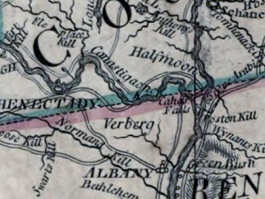

|
by
Niskayuna (corrupted from Native language "Canistigone" possibly meaning "corn flats") has evolved from a traditional term referring to the southern flats of the Mohawk River - located east of Schenectady and north of the Manor of Rensselaerswyck. This information page presents elements of that story in their city of Albany context. Located beyond the jurisdiction of the Van Rensselaers, New Netherland-era farmers first occupied the bottomlands during the 1660s. A translated transcription of the "original" deed from 1661 has been preserved among some family papers. Some of the settlers, including Jan Clute and Ryckert Claese Van Vranken and his son, Maas Ryckse, were or became residents of Albany. New Netherland pioneer Captain Marte Cregier and/or his same-named son were prominent residents of Canastigione. Albany resident Gerrit Spoor and his siblings grew up on their father's Niskayuna farm. Traditional sources also say that in 1667 the Mohawks gave five islands in the river there to Hilletie Van Slyck Van Olinda as payment for her services as interpreter. A military outpost presently known as "Fort Niskayuna" was mentioned as early as 1691. Jan Spoor sold his 'manured and cultivated' land at "Canastigone" to Johannes Schuyler in 1698. A so-called "Niskayuna Patent" was granted to what would become the Niskayuna ">Dutch church in 1738. It was to encompass 2,500 acres, was located "east and south of the Schenectady patent and extended from the Ael-plaats south to the north line of the manor of Rensselaerswyck." The actual church plot was much smaller. Church services in Niskayuna appear to have dated from the 1750s. Variously spelled, Niskayuna was located on most contemporary maps. It was connected to Albany by a rudimentary wagon road. Settlement in the area has been charted on the Bleecker map of 1767. About 1776, Ann Lee's Shakers settled in the area near today's Albany Airport. They cleared the land and erected a meeting house as early as 1784. In 1790, David Meacham and Hezekiah Noble were prominent in the Niskayuna Shaker community which mostly was referred to as Watervliet. Originally part of old Albany County, Niskayuna then was a part of the town of Watervliet and in 1809 was erected into a separate town within newly formed Schenectady County. The bridge across the Mohawk at Rexford was built about 1805.
Here are some links to sources for Niskayuna's early history. Here is a narrative and basic chronology; Wikipedia summary. Link to directory of online historical resources. In this exposition, we are not attempting to come to terms with land title questions but rather to describe the "Niskayuna" part of the holdings of some early Albany residents. Detail from an engraving of the so-called Sauthier Map dated 1776. Copied and adapted from an online resource. This image is not satisfactory nor adequate for many reasons but it does locate Niskayuna on the 18th century Mohawk River landscape. A detail from the northern edge of Bleecker Map of 1767 which locates individual farms might be more useful. Home | Site Index | Navigation | Email | New York State Museum posted: 5/1/02; last revised 11/4/13 |